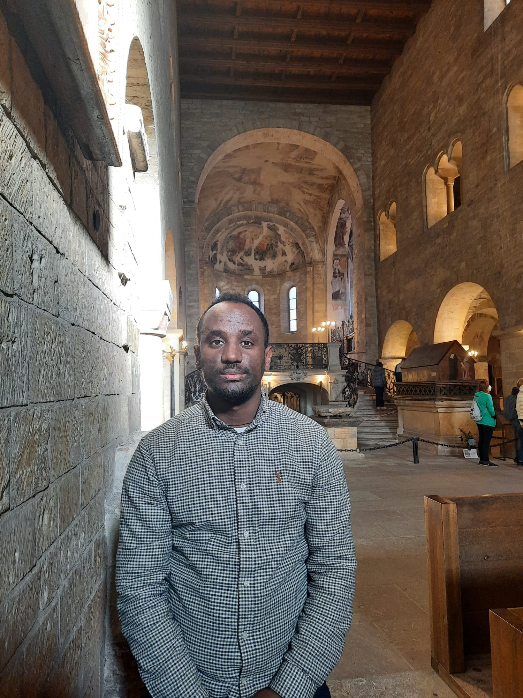

Welcome
Water Resources Engineer | Researcher | Nature-Based Solutions Advocate
Welcome to my personal academic portfolio. Here you can find details about my professional background, academic work, and publications.
Water Resources Engineer | Researcher | Nature-Based Solutions Advocate
Welcome to my personal academic portfolio. Here you can find details about my professional background, academic work, and publications.
Lecturer, Researcher, and Engineer with extensive experience in geohydrological modeling and nature-based solutions.
Hydrological modeling, drought analysis, and sustainable water resources management using coupled models.